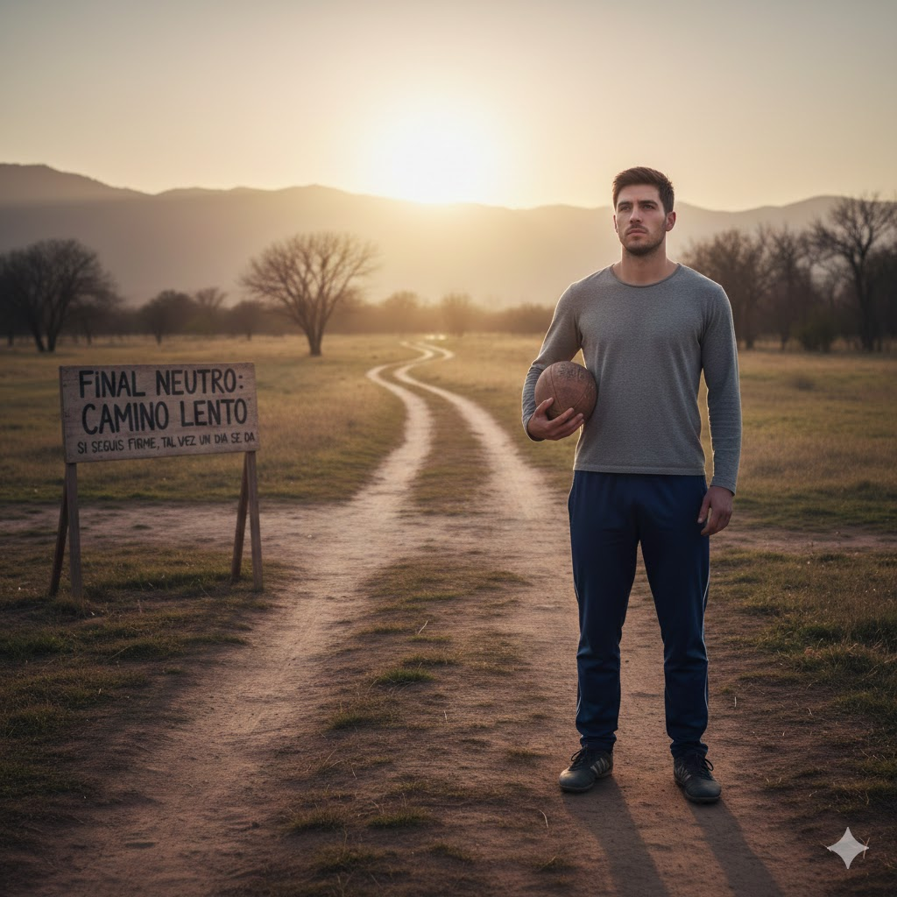

Diego Guevara 24128
Sistemas y tecnologias Web
Mi historia respecto a fuchibol
FINAL NEUTRO: Paso a paso
No todo es película te va “bien”, pero sin explotar. Seguís jugando, seguís aprendiendo, y el camino se vuelve largo.
Igual te queda algo claro: si seguís firme, tal vez un día se da.
